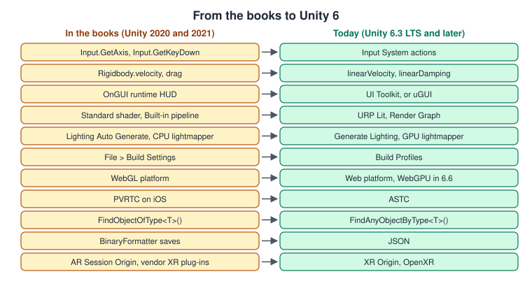
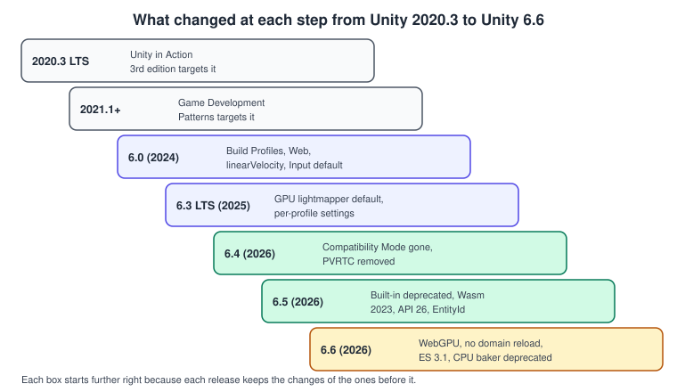
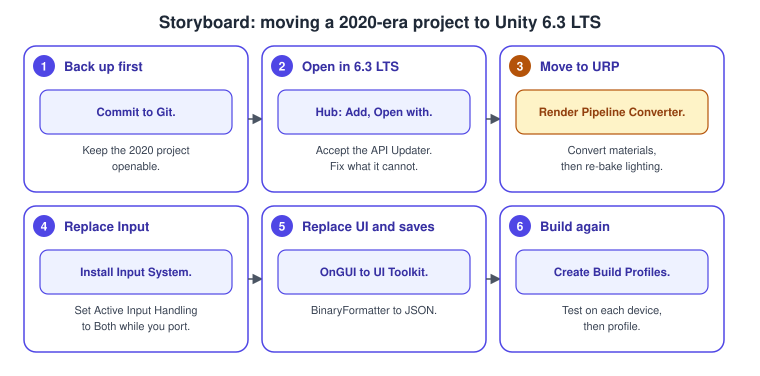
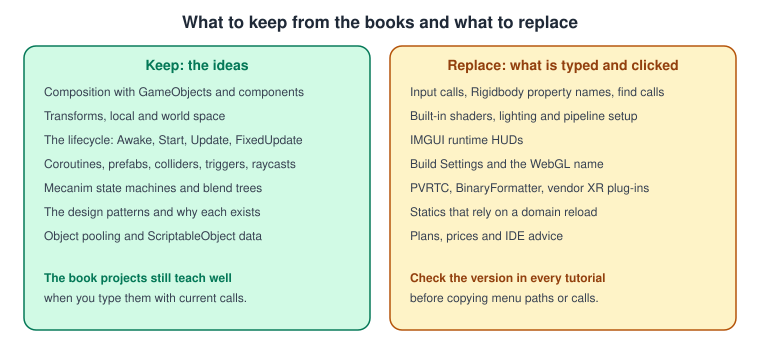

What Has Changed Since the Older Unity Guides
|
This content was generated with the assistance of AI and should be verified against the official documentation before being relied on in production. |
The ideas in the two older Unity books are still sound: GameObjects composed of components, the Transform hierarchy, the MonoBehaviour lifecycle, prefabs, colliders and raycasts, Mecanim, and the design patterns that keep a game maintainable. What has changed is much of what is typed and clicked: the input calls, some physics property names, the HUD code, the shaders and the render pipeline, the lighting workflow, the build window, the Web target and the plans. Unity in Action targets Unity 2020.3 LTS with the Built-in Render Pipeline and the legacy Input Manager, and Game Development Patterns with Unity 2021 targets Unity 2021.1 and later; this sub-section documents Unity 6.3 LTS (6000.3) and marks what changed up to Unity 6.6. This page lists, book by book, the statements that are out of date and what to do today, so that you can keep reading the books for their explanations and use the pages of this sub-section for current code. The facts were checked on 5 November 2026 against the Unity Manual, the what’s-new pages of each release and Unity’s support and pricing pages. For the changes that affect all graphics libraries, not only Unity, see What Has Changed Since the Older Guides.
The books have the short names used in the tables: UIA (Joseph Hocking, Unity in Action, 3rd edition, Manning, 2022) and GDP (David Baron, Game Development Patterns with Unity 2021, 2nd edition, Packt, 2021). Chapter numbers are those of the books. Both are listed in the section bibliography.

The left column is the style of both books; the right column is what the pages of this sub-section use. Part of the left column still compiles, which is why older code does not always fail on the first line: the cost of staying on it is warnings, missing features and, in the newest releases, compilation errors.
From Unity 2020.3 to Unity 6.6

Unity also changed its version numbers on the way: the releases named after years (2020.3, 2021.3, 2022.3) were followed by Unity 6, internally 6000.0, and tutorials from the 2023 releases are closer to Unity 6 than to the books. A tutorial’s version is the first thing to check, because the same menu path can mean something different on each side of Unity 6.
The corrections, book by book
Both books
| Chapters | What the books say | What is current | Release or date | Read more |
|---|---|---|---|---|
UIA 3 and 7, GDP 4 to 7 |
Runtime HUDs and test buttons are drawn in |
Use UI Toolkit for runtime UI, or uGUI where a project already uses it. IMGUI remains useful for quick debug overlays. |
UI Toolkit recommended in Unity 6 |
|
GDP 4, UIA 9 |
Static singletons and managers can rely on static fields being cleared when Play mode starts. |
Since 6.6 new projects default to Reload Scene only, so a static keeps its value between runs. Reset statics with |
Unity 6.6 |
C# Scripting and the MonoBehaviour Lifecycle, Project Architecture and Design Patterns |
Both books |
Neither book mentions Render Graph or |
Custom passes in URP use Render Graph. Identifiers use the 64-bit |
Unity 6.4 and 6.5 |
Render Graph and Custom Passes, GameObjects, Components and Transforms |
Unity in Action, 3rd edition
| Chapters | What the book says | What is current | Release or date | Read more |
|---|---|---|---|---|
Whole book |
Unity 2020.3 LTS. |
Unity 6.3 LTS, with Unity 6.6 as the latest Supported release. |
December 2025 and September 2026 |
|
1 |
Visual Studio for Mac is the code editor on macOS. |
Retired on 31 August 2024. Use Visual Studio Code with the Unity extension, or Rider. |
31 August 2024 |
|
1 |
The plan details of its time. |
Personal is free up to US$200,000 with an optional splash screen, Pro is US$2,310 per seat per year, Enterprise is required above US$25 million, and the Runtime Fee was cancelled. |
Unity 6 and 12 January 2026 |
|
2, 3, 6 and 8 |
|
The Input System, installed by default in new Unity 6 projects. The legacy manager is discouraged but not formally deprecated. |
Unity 6.0 |
|
6 and 9 |
|
|
Unity 6.0 |
|
5 and 7 |
TextMeshPro is a separate package. |
It is part of |
Unity 6 |
|
4 and 10 |
The Standard shader, the Built-in Render Pipeline and the Lighting window’s Auto Generate. |
The Built-in pipeline is deprecated, so use URP and its Lit shader. Auto Generate was removed, so use Generate Lighting. The GPU lightmapper is the default and the CPU light baker is deprecated. |
Unity 6.0, 6.3, 6.5 and 6.6 |
|
12 and 13 |
File > Build Settings. |
Build Profiles. |
Unity 6.0 |
|
12 |
Saves with |
Microsoft calls it insecure and removed it from .NET 9. Use JSON. |
.NET 9 |
|
13 |
The "WebGL" platform. |
The platform is named Web. WebAssembly 2023 is the default and WebGPU is a production graphics API. |
Unity 6.0, 6.5 and 6.6 |
|
13 |
PVRTC textures for iOS. |
Removed. Use ASTC. |
Unity 6.4 |
|
13 |
The Oculus and Windows XR plug-ins and |
OpenXR with the Meta Quest and Android XR support, and |
AR Foundation 6 |
|
13 |
The Android minimum versions of its time. |
Unity 6.3 LTS supports API level 25 and later. The minimum becomes API level 26 in 6.5, and OpenGL ES 3.1 in 6.6. |
Unity 6.5 and 6.6 |
Game Development Patterns with Unity 2021
| Chapters | What the book says | What is current | Release or date | Read more |
|---|---|---|---|---|
4 and 9 |
|
|
Unity 6.0 (old methods obsolete) |
|
6 |
Links to the Unity 2021.2 documentation of |
The concept is still valid. The official e-book favours ScriptableObject event channels and C# events. |
July 2024 |
Project Architecture and Design Patterns, ScriptableObjects and Data-Driven Design |
8 |
Object pooling is described as a recent addition to Unity. |
|
Unity 2021 |
Moving an older project

-
Commit the project to version control, so that you can always go back. Leave the
Libraryfolder out. -
In the Hub, add the project and open it with Unity 6.3 LTS. Accept the API Updater, which rewrites calls it can translate, then fix the remaining console errors.
-
Move the project to URP with the Render Pipeline Converter (Render Pipelines Overview), then generate the lighting again (Materials, Textures and Lighting).
-
Install the Input System and set Active Input Handling to Both while you port one script at a time (Input System).
-
Replace
OnGUIHUDs with UI Toolkit andBinaryFormattersaves with JSON (UI Toolkit and Saving, Loading and HTTP Networking). -
Create a Build Profile for each target, check the texture formats, test on the devices and profile again (Build Profiles and Platforms and Profiling and Optimization).
Move in one step to the LTS rather than through each release between: the API Updater handles the old calls, and every intermediate version would cost a test pass of its own.
What is still correct in the books

-
The explanations of composition, the Transform hierarchy, execution order, coroutines, prefabs, colliders, triggers, raycasts, sprites, Mecanim and audio remain correct. Only some of the names around them have changed.
-
The GDP catalogue of patterns does not depend on a Unity version: the reasons for State, Command, Observer, Object Pool, Strategy and the others apply as before.
-
The structure of the UIA projects (block out a level, add a player, add behaviour, then polish and build) is the structure of the Bookshelf in the Unity sub-section.
-
Where a book and the Unity Manual disagree, follow the Manual for the version you use.
See also
-
Unity for the sub-section overview, the version baseline and its coverage map.
-
Licensing and Pricing for the plans and the Runtime Fee.
-
Unity Cheat Sheet for the one-page migration box.
References
-
What’s new in Unity 6: https://docs.unity.com/en-us/engine/6000.6/manual/whats-new/unity6
-
What’s new in Unity 6.3: https://docs.unity.com/en-us/engine/6000.6/manual/whats-new/unity63
-
What’s new in Unity 6.4: https://docs.unity.com/en-us/engine/6000.6/manual/whats-new/unity64
-
What’s new in Unity 6.5: https://docs.unity.com/en-us/engine/6000.6/manual/whats-new/unity65
-
What’s new in Unity 6.6: https://docs.unity.com/en-us/engine/6000.6/manual/whats-new/unity66
-
Render pipeline strategy for 2026: https://unity.com/topics/render-pipelines-strategy-for-2026
-
Runtime Fee cancellation: https://unity.com/blog/unity-is-canceling-the-runtime-fee
-
Microsoft, BinaryFormatter security guide: https://learn.microsoft.com/en-us/dotnet/standard/serialization/binaryformatter-security-guide
-
Microsoft, Visual Studio for Mac retirement: https://learn.microsoft.com/en-us/lifecycle/announcements/visual-studio-mac-end-of-servicing
-
Unity e-book on design patterns and SOLID: https://unity.com/resources/design-patterns-solid-ebook
-
The books listed in the section bibliography